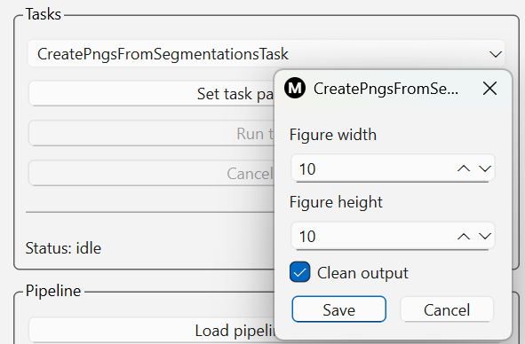

Running individual tasks in a basic workflow
Mosamatic Desktop 2 is a task-oriented tool. This means that you can run a sequence
of tasks and have each task's output serve as input to the next task. You start by
specifying the main input directory. Then you run your first task. This task will
process the images in the input directory and save the output results (which can be
another set of images or something else) to its output directory. This output directory
will be at the same level as the input directory and named according to the task's name.
For example, if your main input directory is D:\Mosamatic\Data\input, and your first
task is called DecompressDicomFilesTask then this task's output directory will be
D:\Mosamatic\Data\decompressdicomfilestask.
Below we will describe the main workflow for analyzing muscle and fat in CT images
at the L3 level. Keep this page open while you're going through the steps in the
tool.
1. Specifying the main input directory
In the top-level Input panel, click the Select input directory button
and select the directory containing all your L3 image slices. This directory will
then appear in the pull-down menu right below this button (see Figure 1).

Figure 1: Specifying main input directory
2. Decompress DICOM files
DICOM images are often stored with JPEG2000 compression. This is not a problem but Mosamatic
Desktop 2 can only process uncompressed images. The DecompressDicomFilesTask task takes
care of this. Any images that were not compressed will be copied without modification to the
task's output directory.
To run the DecompressDicomFilesTask, select it from the
pull-down menu in the Tasks panel (see Figure 2). This task will use the previously
specified main input directory for its input, i.e., the directory with your L3 images. If you
want it to use another input directory, select it in the pull-down menu of the Input
panel.

Figure 2: Selecting task for decompressing DICOM files and setting its parameters
After selecting the DecompressDicomFilesTask, click the Set task parameters button.
This will allow you to configure the task's parameters (if any). Each task has a Clean output
parameter that tells it to delete any existing output directories for the task, if it already
exists. By default, the Clean output option is enabled. The DecompressDicomFilesTask
does not have any other parameters to just click the Save button. This will enabled the
Run task button. Click it to run the task. Based on the number of files in the main input
directory, a progress bar will show the task's progress as a percentage (see Figure 3).

Figure 3: Showing progress of task
When the DecompressDicomFilesTask task has finished, its output directory will be added to
the pull-down menu of the Input panel and automatically selected so you can run the next
task rightaway.
3. Rescale DICOM image to 512 by 512
Mosamatic Desktop 2 can only process DICOM images that are 512 by 512 pixels in size. Sometimes
larger (often wider) images occur, for example, for obese patients that need a larger Field of View
(FOV) to capture the full anatomy of the patient. For such images, Mosamatic Desktop 2 can perform
a rescaling operation that first adds black space to the image to make it square, and then downscale
the image to obtain an image of 512 by 512 pixels. The consequence of this operation is that you may
lose a bit of resolution (the anatomy is covered by fewer pixels). The exact impact of this is not
completely known but it won't affect the mean gray values of the rescaled image, only the surface
areas of the muscle and fat regions (slightly).
The input directory for this task can be selected in the main input panel's pull-down menu.
Figure 4 shows selection of the RescaleDicomFilesTask and its parameters. The target size is set to
512 by default and should stay that way for Mosamatic Desktop 2.
Figure 4: Task selection and parameters for rescaling DICOM files
4. Automatic annotation of muscle and fat
After decompressing and rescaling the L3 images (if needed), you are now ready to run the automatic
muscle and fat annotation on the images. Figure 5 shows this task's parameters. The first thing to
do is select the model type. This refers to the AI model that you plan to use. By default it is set
to "tensorflow". An alternative is "torch" which is an AI model for L3 muscle and fat annotation using
a PyTorch-based AI model. This model is still work in progress though and does not give the exact
same results as the TensorFlow model so use "tensorflow" for now.
The input directory for this task can be selected from the main input panel's pull-down menu and is
probably the output directory of the previous task (RescaleDicomFilesTask).
Figure 5: Task parameters for muscle and fat annotation
Annotating muscle and fat in the L3 images will take some time. Please check the progress bar for
indication how far the AI model has progressed. The outputs of this task is a set of NumPy arrays
that contain the labels specifying which tissue each pixel belongs to (most likely), i.e., muscle,
subcutaneous fat and visceral fat.
5. Calculation of body composition metrics
After automatically annotating muscle and fat in the L3 images, you will have segmentation outputs
that specify the muscle, subcutaneous fat and visceral fat regions. A number of metrics can be calculated
for these regions namely:
- Muscle area
- Mean muscle radiation attenutation
- Subcutaneous fat area
- Mean subcutaneous fat radiation attenutation
- Visceral fat area
- Mean visceral fat radiation attenutation
The area metrics are calculated by taking the area of each pixel (in mm^2) and summing the areas of
all pixels inside the area. This is done for muscle, subcutaneous fat and visceral fat separately. The
radiation attenutation metrics are calculated by summing the Hounsfield Unit values of all pixels inside the
area and dividing by the number of pixels in that area. This is done for muscle, subcutaneous fat
and visceral fat.
The input directory for this task can be selected from the main input panel's pull-down menu and will
be the output directory of the previous task (MuscleFatSegmentationTask).
The parameters for the CalculateMetricsTask are shown in Figure 6. Using the button Open image directory
you can select the directory containing the L3 images. This will probably be the output directory of either
the DecompressDicomFilesTask or RescaleDicomFilesTask. The input directory for this task should be selected
in the main input directory pull-down menu and refer to the output directory of the MuscleFatSegmentationTask.
Figure 6: Task parameters for calculating body composition metrics
6. Generating PNG images of muscle and fat segmentations
To be able to look at the output of the MuscleFatSegmentationTask, it makes sense to convert these outputs
to PNG images for easy viewing. This can be done with the CreatePngsFromSegmentationsTask. It takes the
NumPy array objects created with the MuscleFatSegmentationTask and convert these to PNG. In the task
parameters (see Figure 7) you can specify the width and height of the resulting figure.

Figure 7: Task parameters for generating PNG images from segmentations